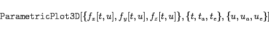
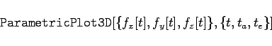

Inhalt Index DeskTop Bronstein

 Computeralgebrasysteme Graphik in Computeralgebrasystemen Graphik mit Mathematica Darstellung von Flächen und Raumkurven
Computeralgebrasysteme Graphik in Computeralgebrasystemen Graphik mit Mathematica Darstellung von Flächen und Raumkurven


Ähnlich wie bei der 2D-Graphik können auch dreidimensionale Objekte, die in Parameterdarstellung gegeben sind, gezeichnet werden. Mit
|  | (20.90) |
wird eine parametrisch vorgegebene Oberfläche gezeichnet, mit
|  | (20.91) |
wird eine dreidimensionale Kurve parametrisch erzeugt.
| Beispiel | ||||||||||||
|
Die Objekte in den folgenden zwei Abbildungen wurden mit den Befehlen
|
Mathematica stellt weitere Anweisungen zur Verfügung, mit denen Dichte- und Konturdiagramme, Balken- und Sektordiagramme sowie Kombinationen der unterschiedlichsten Diagrammarten erzeugt werden können.
| Beispiel |
|
Die Darstellung zum LORENZ-Attraktor wurde mit Mathematica erzeugt. |